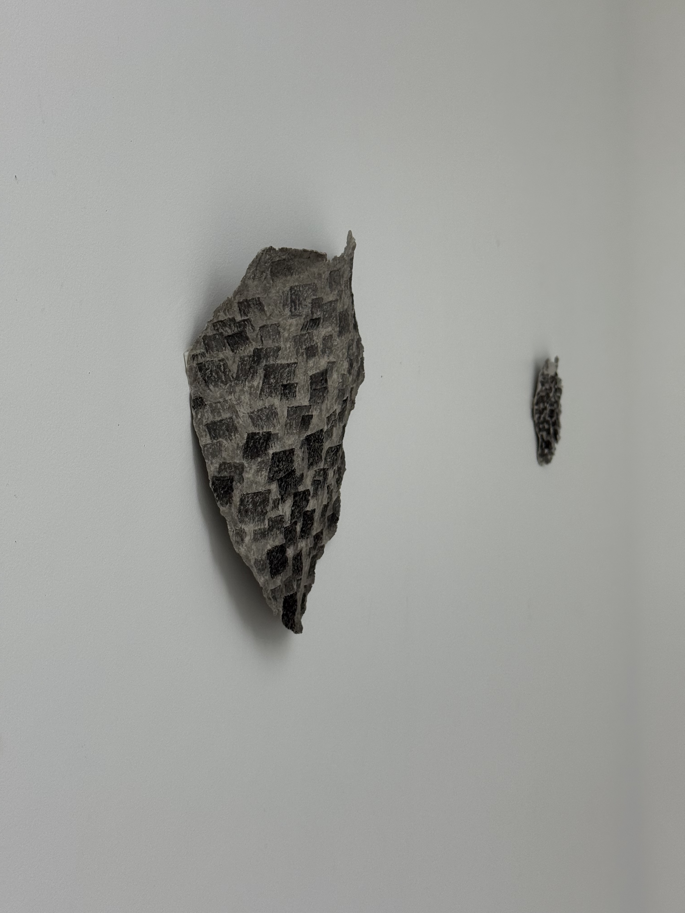

Cabane sur l’eau
Dans l’ensemble de ce travail, l’eau devient un fil conducteur reliant les différentes parties. J’ai dessiné des reflets et des surfaces d’eau à l’encre de Chine sur le papier que je fabrique.
Pour moi, ces papiers ne sont pas seulement des supports destinés à recevoir des traces : ils deviennent des surfaces sensibles à partir desquelles l’image peut émerger. L’image n’est plus simplement un objet représenté ou reproduit, mais le résultat d’un processus de transformation, de sédimentation et de contact entre les matériaux.
Lorsque j’observe les reflets à la surface du lac, je pense à l’histoire de l’île de Vassivière et au village qui se trouvait autrefois sous les eaux. Dans ces dessins, j’ai remplacé les reflets par des formes de tentes et de cabanes issues de mon projet de diplôme, afin de superposer la mémoire, la réalité et l’imaginaire dans un même espace.